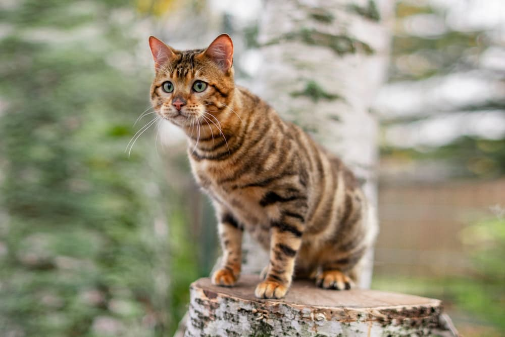

Welcome to Catmania!!
Welcome to CatMania! Your ultimate destination for everything feline. Explore a diverse range of cat breeds, from majestic Maine Coons to playful Scottish Folds. Immerse yourself in stunning cat photography while learning about each breed's unique characteristics. Get ready to embark on a purrfect journey into the world of cats!
Explore a variety of cat breeds with detailed information provided below.
Bobtail

The bobtail cat, known for its distinctive short tail, exhibits a playful and affectionate nature, making it a beloved companion among cat enthusiasts worldwide. Read more
Abyssinian
The Abyssinian cat: Known for its sleek coat, ticked fur pattern, and playful demeanor, this breed is beloved for its active and affectionate nature. Read more
Korat
The Korat cat: A striking silver-blue coat, expressive green eyes, and a playful yet affectionate nature define this ancient Thai breed.Read more
Toyger
"The Toyger cat, bred to resemble a miniature tiger, boasts striking tiger-like stripes and a playful demeanor." Read more
Munchkin
The Munchkin cat, known for its short legs, is an adorable breed renowned for its playful nature and adaptability.Read more
Bombay

The Bombay cat: Known for its sleek black coat and striking copper eyes, this breed is affectionate, playful, and loves to cuddle. Read more
Ragamuffin
The Ragamuffin cat: A gentle giant with a loving disposition, known for its affectionate nature and plush, rabbit-like fur. Read more
Balinese
The Balinese cat, known for its elegance and grace, is a long-haired breed with striking blue almond-shaped eyes and a luxurious silky coat resembling that of a Siamese cat. Read more
Turkish van
The Turkish Van cat, known for its unique swimming ability, boasts a semi-longhaired coat and distinctive coloration, often with a van-patterned mask on the head and tail. Read more
Chausie
The Chausie cat, a hybrid of domestic and wild cats, boasts a playful demeanor and striking appearance. Read more
Bobtail
The Sokoke cat, originating from Kenya, is known for its distinctive tabby coat and agile nature. Read more